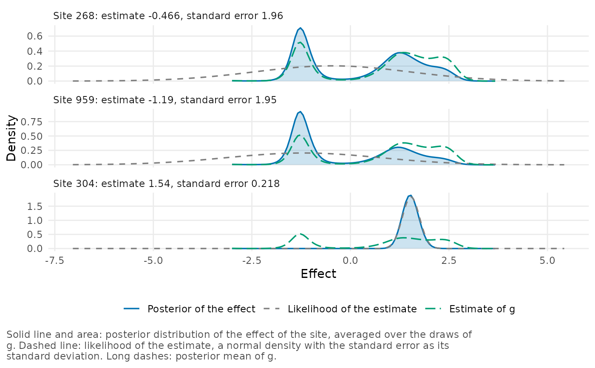
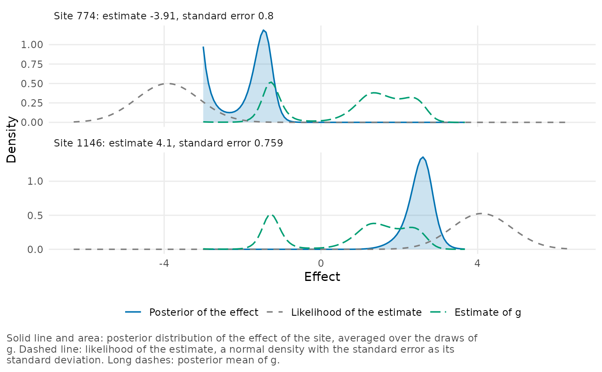

Plot the posterior distribution of individual site effects
Source:R/plot-site-posterior.R
plot_site_posterior.Rdplot_site_posterior() shows the posterior distribution of the effect
of each selected site, together with the two components that determine
it: the likelihood of the site's estimate and the estimated distribution
of effects \(g\). A posterior distribution with two modes, or with
substantial mass at a limit of the grid, can be seen in this plot but
not in a posterior mean and an interval.
Arguments
- x
A
bef_fitobject created bybayes_efron_fit().- sites
Sites to plot, at most 12, specified as a numeric vector of positions in the data or a character vector of site labels.
- likelihood
If
TRUE(the default), the likelihood of the estimate is shown. It is a normal density with the estimate as its mean and the standard error as its standard deviation.- prior
If
TRUE(the default), the posterior mean of \(g\) is shown.- scale
Positive number by which effect values are multiplied and densities divided, e.g.,
scale = 100to show differences in proportions as percentage points.- ...
These dots are for future extensions and must be empty.
Details
The posterior distribution of an effect is proportional to the likelihood times \(g\), averaged over the posterior draws of \(g\). If the likelihood is wide and \(g\) has two groups, the posterior distribution has two modes and its mean lies between them, at a value that the effect is unlikely to have.
Each site is shown in its own panel. All panels have the same horizontal axis, but their vertical axes differ.
For point masses, the curves for the posterior distribution and for
\(g\) are the probabilities of the grid points divided by the grid
spacing, as in plot_g().
Examples
# Two imprecise estimates, whose posterior distributions have a mode in
# each group, and the most precise one.
plot_site_posterior(twin_towers_fit, sites = c(268, 959, 304))

# The two sites with the most posterior mass at the lower and at the
# upper end of the grid.
ends <- diagnose(twin_towers_fit)$grid$ends
plot_site_posterior(twin_towers_fit, sites = ends$site)
